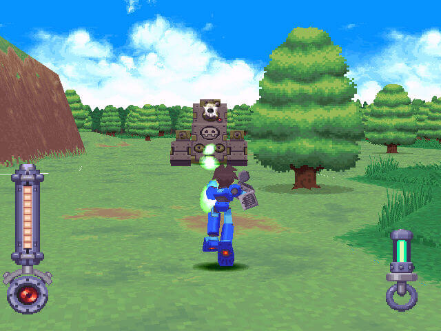

The Blue Bomber Blues
Author: Adam Essmyer, Published:April 30th, 2024

Game: Megaman64/Megaman Legends
Publisher: Capcom
Developer: Capcom Production Studio 2
Release Date: September 10th, 1998(Playstation, NA),
January 10th, 2001(Nintendo 64, NA)
In Capcom's first foray into 3D with the Blue Bomber, Megaman Legends was a game with massive ambition; a semi-open world layout; it had so much potential to be great. However, like many games making the transition to 3D in the mid to late nineties, problems abound. Developers were still figuring out the idea of camera control in a 3D space; and both the Playstation and Nintendo 64 controllers didn't help.